Initialize and test a flow#
Experimental feature
This is an experimental feature, and may change at any time. Learn more.
From this document, customer can initialize a flow and test it.
Initialize flow#
Creating a flow folder with code/prompts and yaml definitions of the flow.
Initialize flow from scratch#
Promptflow can create three types of flow folder:
standard: Basic structure of flow folder.
chat: Chat flow is designed for conversational application development, building upon the capabilities of standard flow and providing enhanced support for chat inputs/outputs and chat history management.
evaluation: Evaluation flows are special types of flows that assess how well the outputs of a flow align with specific criteria and goals.
# Create a flow
pf flow init --flow <flow-name>
# Create a chat flow
pf flow init --flow <flow-name> --type chat
Use VS Code explorer pane > directory icon > right click > the “New flow in this directory” action. Follow the popped out dialog to initialize your flow in the target folder. 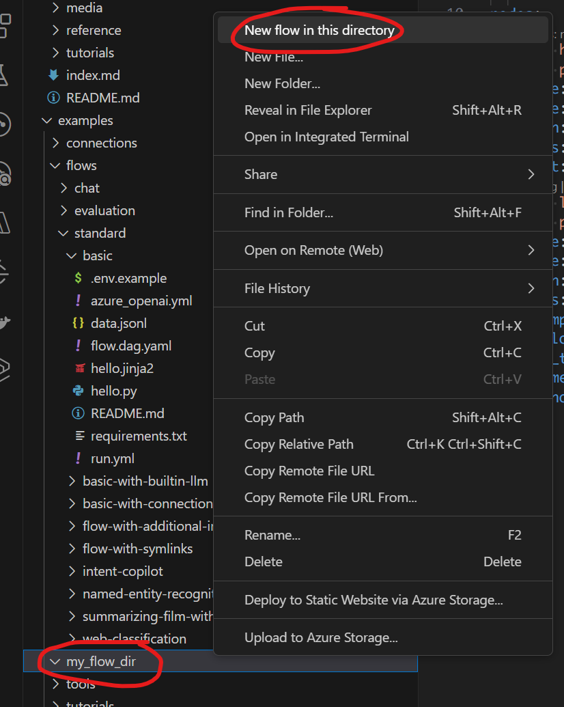
Alternatively, you can use the “Create new flow” action on the prompt flow pane > quick access section to create a new flow 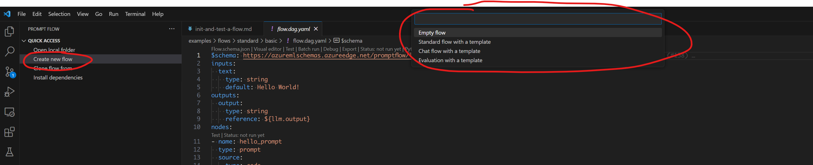
Structure of flow folder:
flow.dag.yaml: The flow definition with inputs/outputs, nodes, tools and variants for authoring purpose.
.promptflow/flow.tools.json: It contains tools meta referenced in
flow.dag.yaml.Source code files (.py, .jinja2): User managed, the code scripts referenced by tools.
requirements.txt: Python package dependencies for this flow.
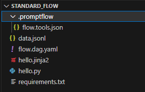
Create from existing code#
Promptflow CLI can generate the yaml definitions needed for prompt flow from the existing folder, using the tools script and prompt templates.
# Create a flow in existing folder
pf flow init --flow <flow-name> --entry <entry-file-name> --function <tool-function-name> --prompt-template <prompt-tempate>
Take customer-intent-extraction for example, which demonstrating how to convert a langchain code into a prompt flow.
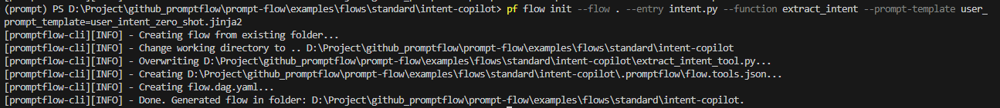
In this case, promptflow CLI generates flow.dag.json, .promptflow/tools.json and extract_intent_tool.py, it is a python tool in the flow.
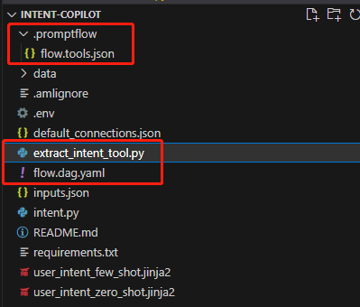
Test a flow#
Note
Testing flow will NOT create a batch run record, therefore it’s unable to use commands like pf run show-details to get the run information. If you want to persist the run record, see Run and evaluate a flow
Promptflow also provides ways to test the initialized flow or flow node. It will help you quickly test your flow.
Visual editor on the VS Code for prompt flow.#
Open the flow.dag.yaml file of your flow. On the top of the yaml editor you can find the “Visual editor” action. Use it to open the Visual editor with GUI support.
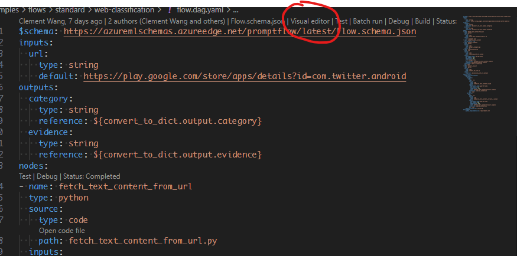
Test flow#
Customer can use CLI or VS Code extension to test the flow.
# Test flow
pf flow test --flow <flow-name>
# Test flow with specified variant
pf flow test --flow <flow-name> --variant '${<node-name>.<variant-name>}'
The log and result of flow test will be displayed in the terminal.
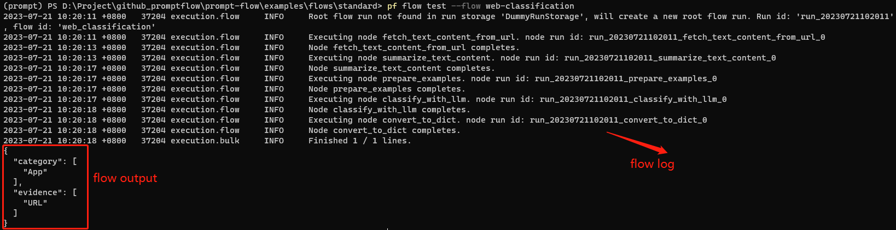
Promptflow CLI will generate test logs and outputs in .promptflow:
flow.detail.json: Defails info of flow test, include the result of each node.
flow.log: The log of flow test.
flow.output.json: The result of flow test.
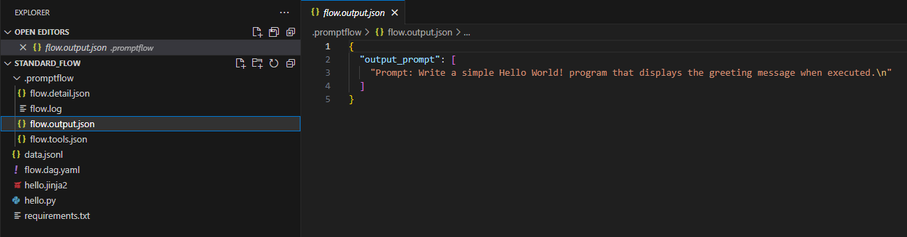
The return value of test function is the flow outputs.
from promptflow import PFClient
pf_client = PFClient()
# Test flow
inputs = {"<flow_input_name>": "<flow_input_value>"} # The inputs of the flow.
flow_result = pf_client.test(flow="<flow_folder_path>", inputs=inputs)
print(f"Flow outputs: {flow_result}")
The log and result of flow test will be displayed in the terminal.
Promptflow CLI will generate test logs and outputs in .promptflow:
flow.detail.json: Defails info of flow test, include the result of each node.
flow.log: The log of flow test.
flow.output.json: The result of flow test.
You can use the action either on the default yaml editor or the visual editor to trigger flow test. See the snapshots below: 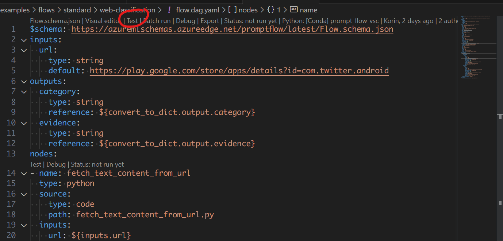 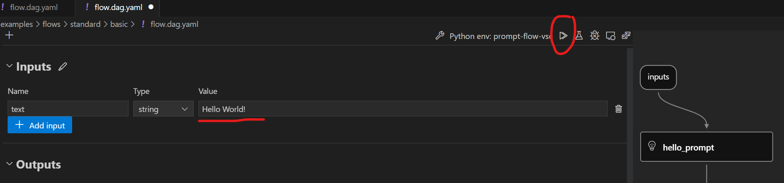
Test a single node in the flow#
Customer can test a single python node in the flow. It will use customer provides date or the default value of the node as input. It will only use customer specified node to execute with the input.
Customer can execute this command to test the flow.
# Test flow node
pf flow test --flow <flow-name> --node <node-name>
The log and result of flow node test will be displayed in the terminal. And the details of node test will generated to .promptflow/flow-<node-name>.node.detail.json.
Customer can execute this command to test the flow. The return value of test function is the node outputs.
from promptflow import PFClient
pf_client = PFClient()
# Test not iun the flow
inputs = {<node_input_name>: <node_input_value>} # The inputs of the node.
node_result = pf_client.test(flow=<flow_folder_path>, inputs=inputs, node=<node_name>)
print(f"Node outputs: {node_result}")
The log and result of flow node test will be displayed in the terminal. And the details of node test will generated to .promptflow/flow-<node-name>.node.detail.json.
The prompt flow extension provides inline actions in both default yaml editor and visual editor to trigger single node runs.
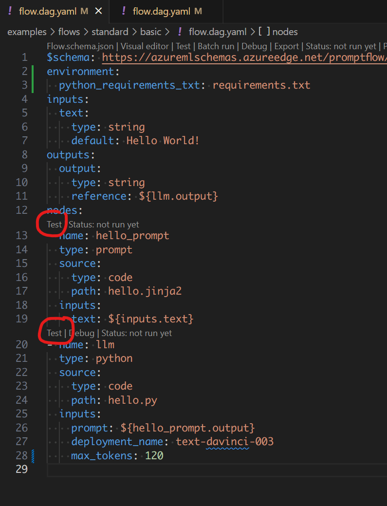 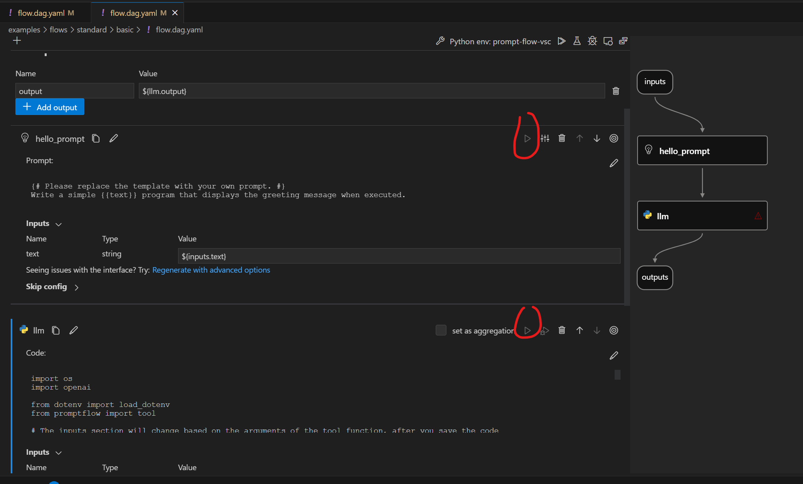
Test with interactive mode#
Promptflow CLI provides a way to start an interactive chat session for chat flow. Customer can use below command to start an interactive chat session:
# Chat in the flow
pf flow test --flow <flow-name> --interactive
After executing this command, customer can interact with the chat flow in the terminal. Customer can press Enter to send the message to chat flow. And customer can quit with ctrl+C. Promptflow CLI will distinguish the output of different roles by color, User input, Bot output, Flow script output, Node output.
Using this chat flow to show how to use interactive mode.
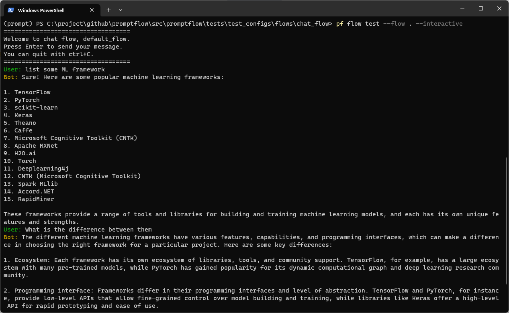
If a flow contains chat inputs or chat outputs in the flow interface, there will be a selection when triggering flow test. You can select the interactive mode if you want to.
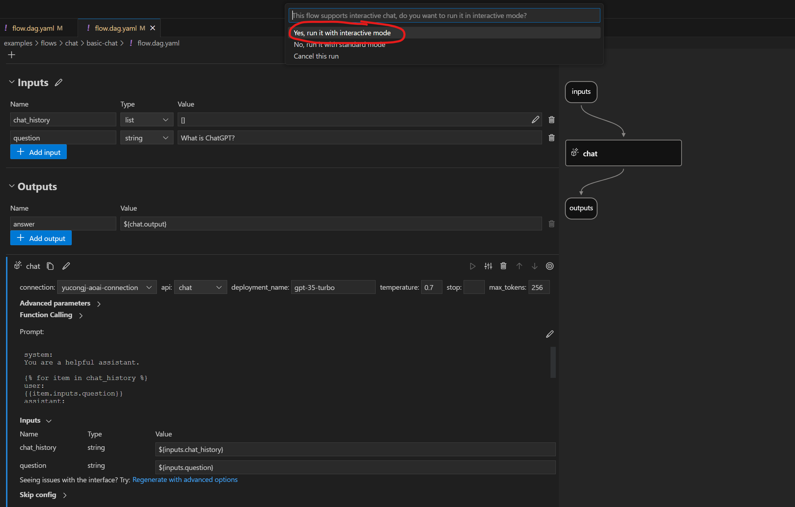 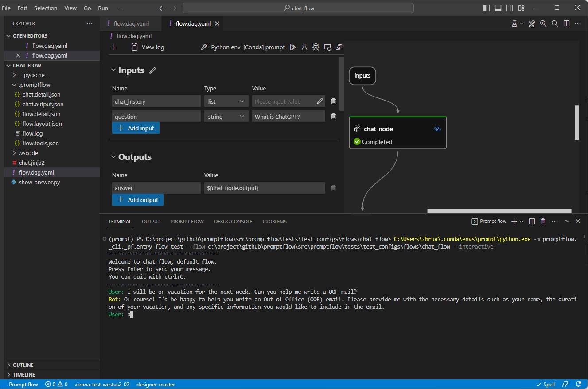
When the LLM node in the chat flow that is connected to the flow output, Promptflow SDK streams the results of the LLM node.
The flow result will be streamed in the terminal as shown below.
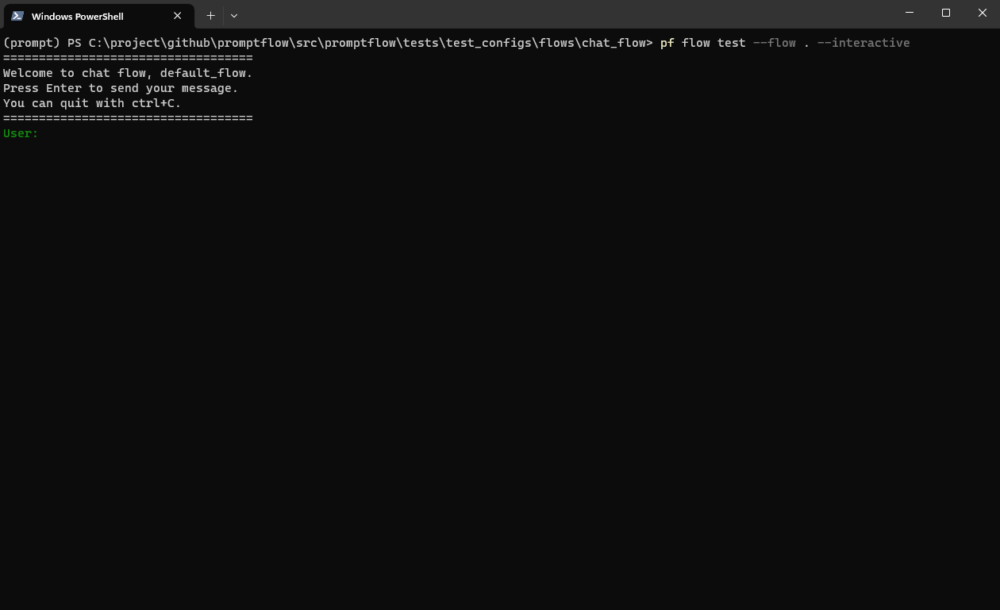
The LLM node return value of test function is a generator, you can consume the result by this way:
from promptflow import PFClient
pf_client = PFClient()
# Test flow
inputs = {"<flow_input_name>": "<flow_input_value>"} # The inputs of the flow.
flow_result = pf_client.test(flow="<flow_folder_path>", inputs=inputs)
for item in flow_result["<LLM_node_output_name>"]:
print(item)
Debug a single node in the flow#
Customer can debug a single python node in VScode by the extension.
Break points and debugging functionalities for the Python steps in your flow. Just set the break points and use the debug actions on either default yaml editor or visual editor. 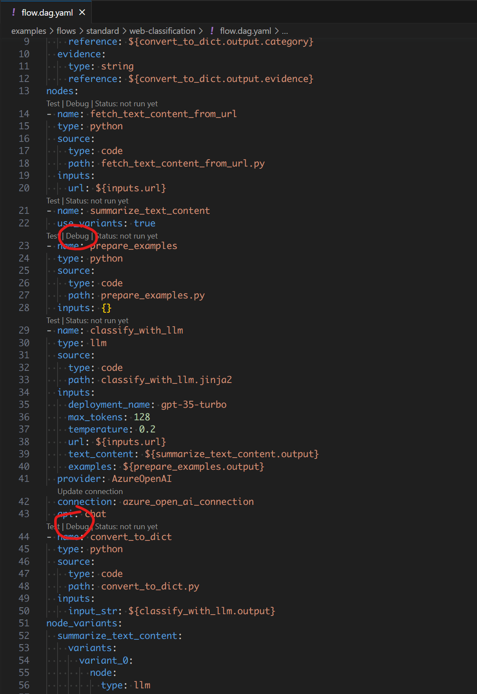 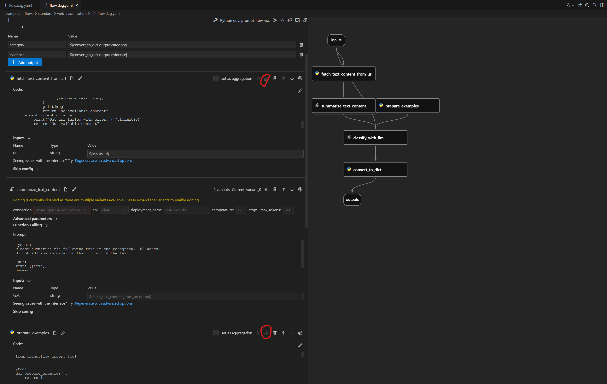